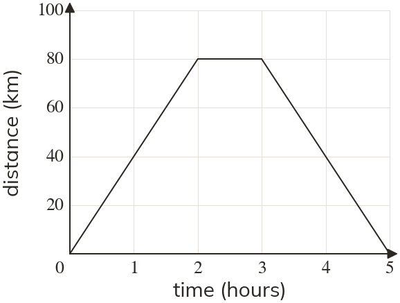
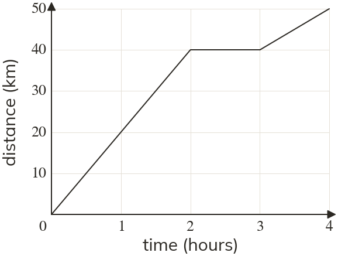
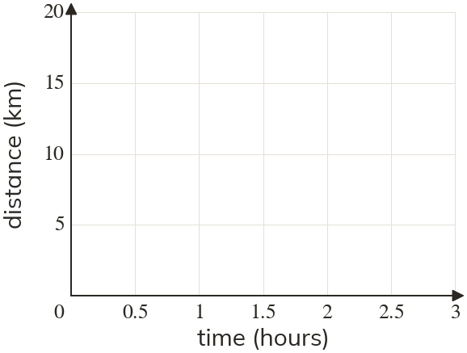

Westonbirt Maths · Direct and Inverse Proportion
Travel Graphs
Name: ______________________ Date: ____________
1
Describe each stage of the journey.

2
Use the graph to find (a) the distance from the start after hour (b) when the cyclist stops (c) how long the stop lasts.

3
In question which moving stage is faster? How do you know?
4
A graph is horizontal from to in minutes and km. What does this section mean?
5
Mia says a section going down to the time axis means the car slowed down. Is she right?
Ext
Draw the graph of a journey of km in hour, a 30-minute stop, then home in minutes.
